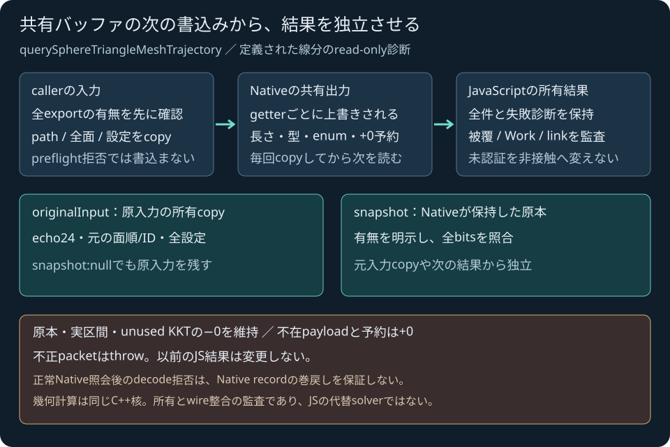

OWNED TRAJECTORY API / BROWSER PROOF
定義した線分全体の診断を、
実WASMから受け取る。
検証用の固定例です。中心を[0.5,1,0.5]から[1.5,1,0.5]へ動かす半径0.25mの球と、静的な1面を照会します。新しいJavaScript APIが全診断を所有コピーして返します。
時刻や衝突応答を計算する操作デモではありません。専用の入力編集ラボ、World・ゲーム接触への統合は後続です。
JavaScriptを準備中。HTTP/HTTPS配信が必要です。
固定入力JSON
入力・所有結果・SDK情報
区間と原本の負零を維持したJSONです。未認証と点貫通を非接触へ変えません。
未実行
